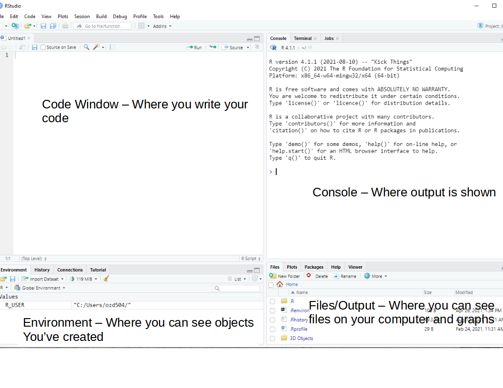
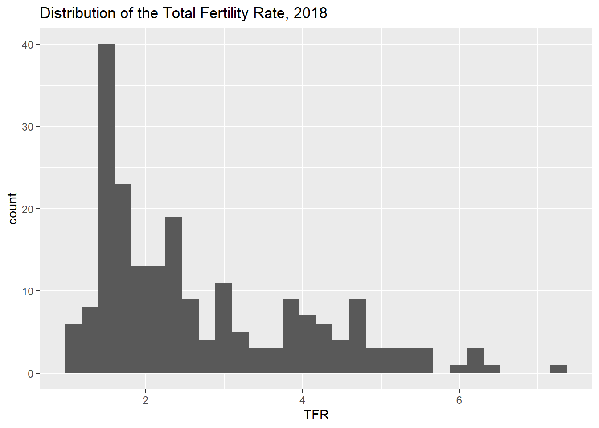
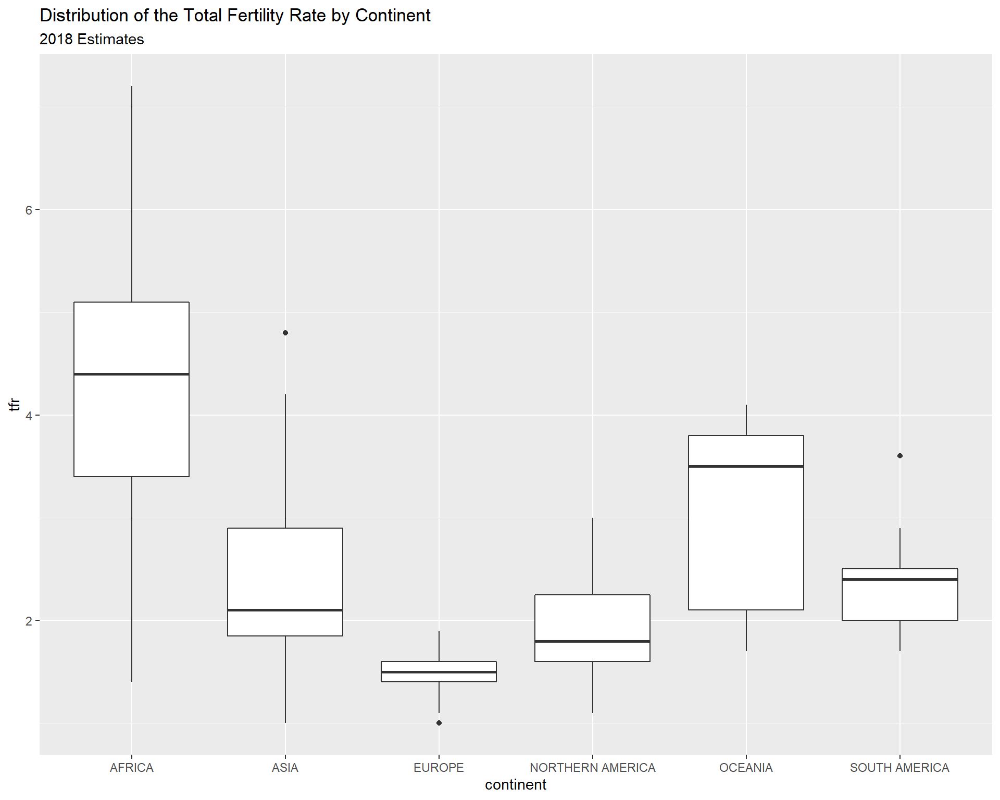
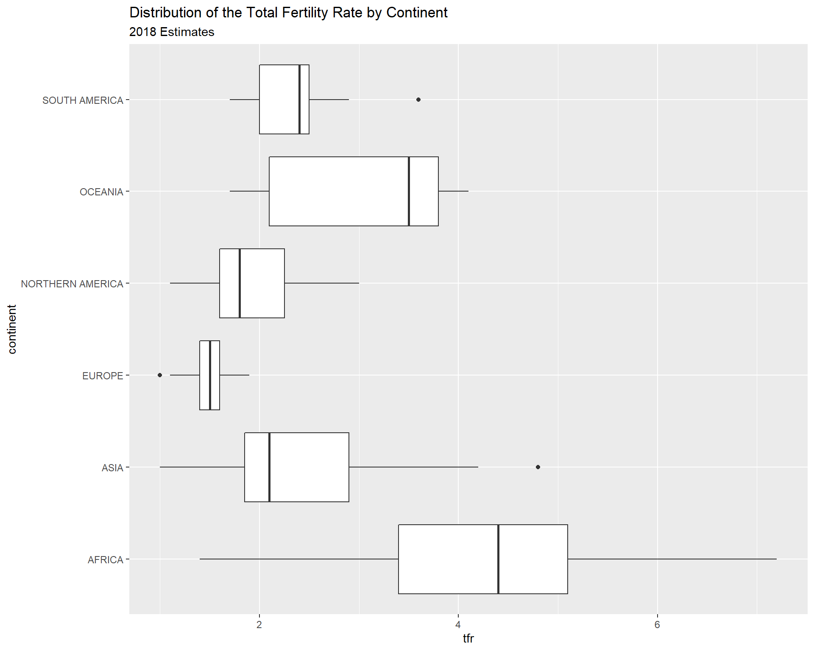
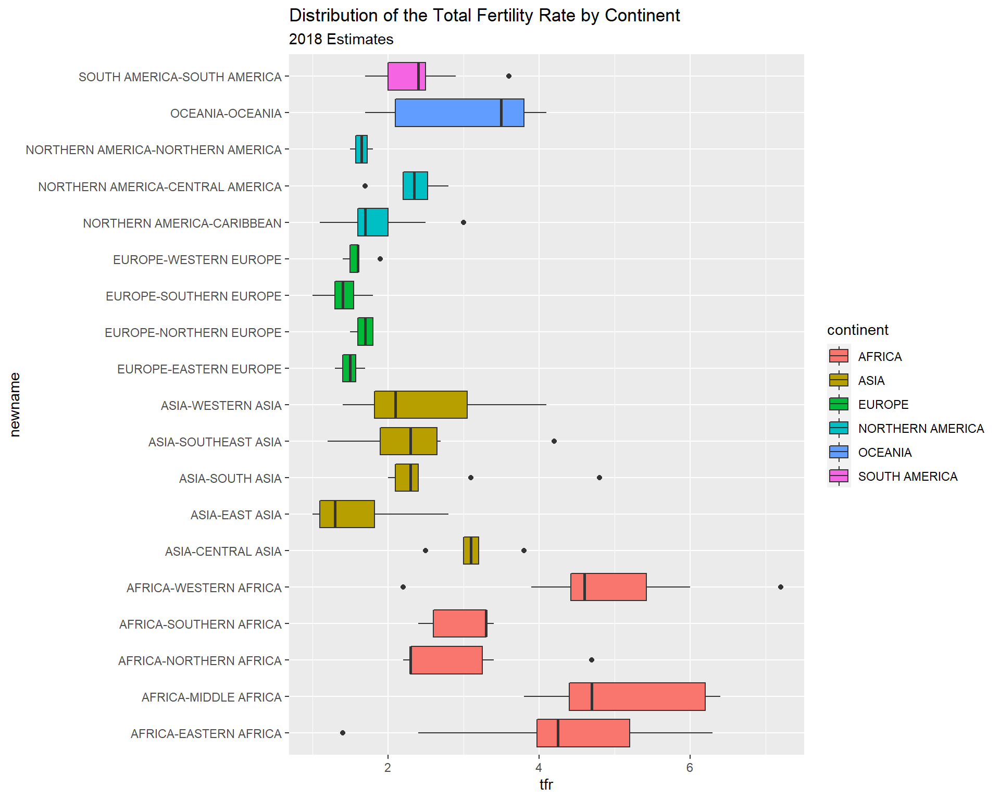
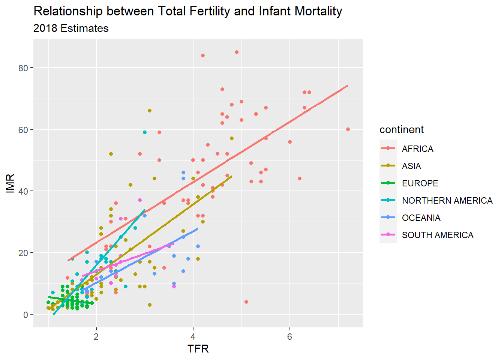
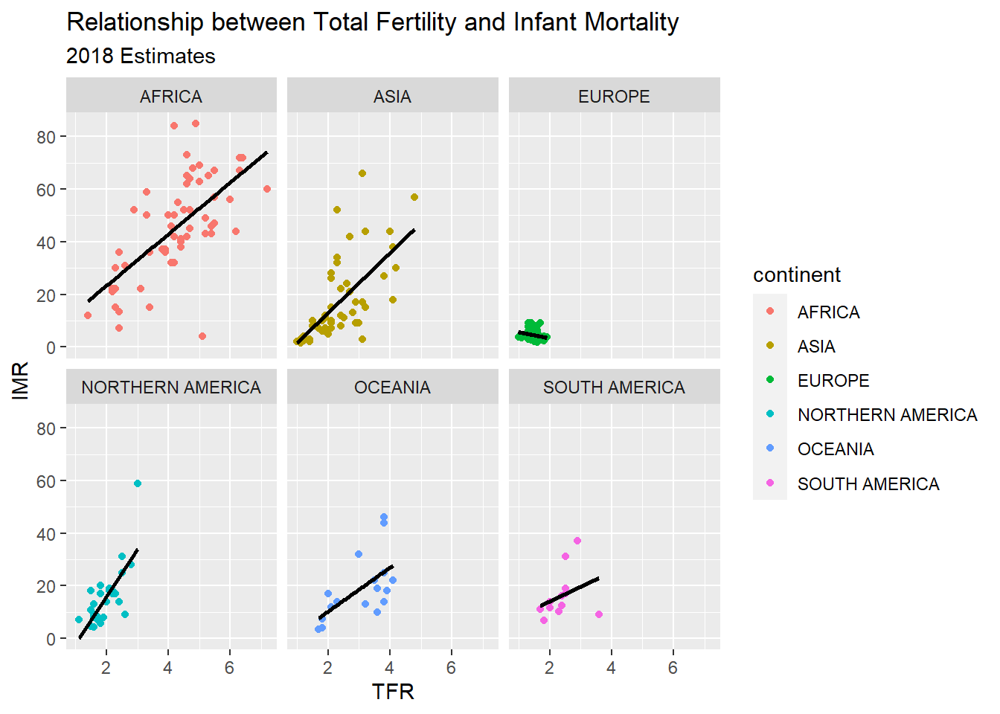

Chapter 3 Introduction to R
This chapter is devoted to introducing R to new users. R was first implemented in the early 1990’s by Robert Gentleman and Ross Ihaka, both faculty members at the University of Auckland. It is an open source software system that specializes in statistical analysis and graphics. R is its own programming language and the R ecosystem includes over 18,000 user-contributed additions to the software, known as packages.
3.1 Welcome to R.
If you’re coming to R from SAS, there is no data step. There are no procs. The SAS and R book Kleinman and Horton (2014) is very useful for going between the two programs.
If you’re coming from SPSS and you’ve been using the button clicking method, be prepared for a steep learning curve. If you’ve been writing syntax in SPSS, you’re at least used to having to code. There’s a good book for SAS and SPSS users by Bob Meunchen at the Univ. of Tennessee here, which may be of some help.
Stata users have fewer official publications at their fingertips to ease the transition to R, but I have always thought that the two were very similar. If you search the internet for information related to R and Stata, you will find a myriad of (somewhat dated) blog posts on which one is better for “data science,” how to “get started” with either and so forth. What is really needed is a text similar to Kleinman and Horton (2014) which acts as a crosswalk between the two programs.
3.2 R and Rstudio
The Rgui is the base version of R, but is not very good to program in. Rstudio is much better, as it gives you a true integrated development environment (IDE), where you can write code in one window, see results in others, see locations of files, and see objects you’ve created. To get started, you should download the R installer for your operating system. Windows and Mac have installer files, and Linux users will install R using their preferred package manager.
Download R from CRAN. If you’re on Windows, I would also highly recommend you install Rtools, because it gives you c++ and Fortran compilers, which many packages need to be installed.
Rstudio can be downloaded for free here.
I would recommend installing the base R program from CRAN first then (for Windows users) install Rtools, then install Rstudio, in that order.
3.3 Introduction to Rstudio
Again, each operating system has its own binary for Rstudio, so pick the one that matches your operating system. Rstudio typically has 4 sub-windows open at any given time.
Rstudio is an open source Integrated Development Environment (IDE) for R. It is a much better interface for using R because it allows you to write code in multiple languages, navigate your computer’s files, and see your output in a very nice single place. The Rstudio IDE has several components that we will explore.

3.3.1 Code window/Source editor pane
This is where you write your R code. You can write R code in a few different file types (more on this later), but the basic one is an R script, with file extension .R
The code window allows you to write and execute your code one line at a time, or to run an entire script at once. I use this to develop new code and when I want to test if things work (a VERY common exercise when writing any code).
To run a single line of code, put your cursor on the line and hit Ctrl-Enter (on Mac CMD-Enter also does this)
To run multiple lines of code, highlight the lines you want to run and do the same thing
3.3.2 Console Pane
This is where most of your non-graphical output will be shown. Any numeric output will appear here, as well as any warnings or error messages. In R a warning doesn’t necessarily mean something went wrong, its just R’s polite way of telling you to pay attention.
An Error means something did go wrong. This is often because you left off a ) or a, sometimes because you misspelled something. I routinely spell
lengthaslenghtwhich causes R to print an error message. If you see an error, don’t worry, R will print some kind of message telling you what went wrong.R’s output is in plain text, although we can produce much prettier output using other output methods, and we’ll talk more about that later.
You can type commands or code into the console as well, and you’ll immediately get the result, versus if you write it in the Source/Code window, you have to run it to see the result. I will often work in the console when I want to get “fast” answers, meaning little checks that I will often do to see the value of something.
3.3.3 Environment or Workspace browser pane
The R environment is where any object you create is stored. In R, anything you read in or create with your code is called an object, and R is said to be an object oriented programming language.
Depending on the type of object something is, you may be able to click on the object in the environment and see more about it.
For instance if the object is a data frame, R will open it in a viewer where you can explore it like a spreadsheet, and sort and filter it as well.
Other objects may not do anything when you click on them.
There is also a useful History tab here that shows you recently executed lines of code from the console or the code pane.
3.3.4 Files/Output/Help pane
The files and output area is where you can interact with files on your local computer, such as data files or code files, or images that R can open.
This area also has a plots window that will display plots you create in R either via typing directly into the console or by running a line(s) of code from the source/code pane.
There is also a very valuable part of this pane that lets you access the help system in R. If you are either looking for something, or you just want to explore the functions, you can get access to all of this here.
3.3.5 R file types
.R files R uses a basic text file with the .R extension. This type of file is useful if you’re going to write a function or do some analysis and don’t want to have formatted output or text. You can use these files for everything, but they are limited in their ability to produce reports and formatted output, so I recommend people work with R Markdown files instead.
.Rmd files Rstudio uses a form of the markdown formatting language, called R Markdown, for creating formatted documents that include code, tables, figures and statistical output. This book is written in R Markdown!
R Markdown is nice for lots of reasons, such as the ability to insert latex equations into documents.
\[ {y_i \sim Normal (x'\beta, \sigma_2)} \]
or to include output tables directly into a document:
library(broom)
library(pander)
fit <- lm(imr~tfr+pcturban+pctlt15_2018+pctwomcontra_all,
data = prb)
pander(broom::tidy(fit))| term | estimate | std.error | statistic | p.value |
|---|---|---|---|---|
| (Intercept) | 6.209 | 6.551 | 0.9478 | 0.3446 |
| tfr | 3.392 | 2.006 | 1.691 | 0.09274 |
| pcturban | -0.0923 | 0.04553 | -2.028 | 0.04425 |
| pctlt15_2018 | 0.8699 | 0.2441 | 3.564 | 0.0004798 |
| pctwomcontra_all | -0.2114 | 0.06018 | -3.512 | 0.0005757 |
This allows you to make tables in Rmarkdown without having to do non-repeatable tasks in Word or some other program. You can basically do your entire analysis, or a sideshow for a presentation, or an entire paper, including bibliography, in Rstudio.
3.3.6 R projects
Rstudio allows you to create a R project, which basically sets up a specific location to store R code for a given project you may be doing. For instance, this book is a single R project, which helps me organize all the chapters, bibliographies, figures, etc.
R projects also allow you to use version control, including Git and SVN, to collaborate and share code and data with others.
3.3.7 R data files
R allows you to read and write its own native data formats, as well as
read and write text formatted files and data files from other
statistical software packages. Two native R data formats are .rds and
.rdata formats. .rds files allow you to save a single R object to an
external files, while .rdata files allow you to save one or more
objects to a file.
Here is a short example of doing this, where I create 2 vectors, x and
y and save them.
x <- c(1, 2,3)
y <- c(4, 5, 6)
saveRDS(x,
file="~/x.rds")
save(list=c("x","y"),
file="xy.rdata")I can also load these into R again:
readRDS(file = "~/x.rds")## [1] 1 2 3load("xy.rdata")Standard methods for importing text data such as comma separated value
or tab delimited files can be read into R using read.csv() or
read.table() and similar writing functions are available.
To read in a dataset from another statistical package, I recommend using
the haven package. It allows you to read and write SAS (both sas7bdat
and xpt files), Stata, SPSS (both .por and .sav files).
For example, here I write out a dataframe containing x and y from
above to a SAS version 7 file:
xy <- data.frame(x = x, y = y)
xy## x y
## 1 1 4
## 2 2 5
## 3 3 6library(haven)
write_sas(data = xy,
path = "~/xy.sas7bdat")I will describe dataframes more later in the chapter.
R also has packages for reading/writing such data formats as JSON, ESRI Shapefiles, Excel spreadsheets, Google Spreadsheets, DBF files, in addition to tools for connecting to SQL databases, and for interfacing with other statistics packages, such as Mplus, OpenBUGS, WinBUGS and various Geographic Information Systems.
3.4 Getting help in R
I wish I had a nickel for every time I ran into a problem trying to do something in R, that would be a lot of nickles. Here are some good tips for finding help in R:
- If you know the name of a function you want to use, but just need
help using it, try
?
?lm
- If you need to find a function to do something, try
??
??"linear model"
- You can also search the history of other R users questions by
tapping into the
RSiteSearch website,
which is an archive of user questions to the R list serve. This can
be used by tying
RSiteSearch()
RSiteSearch("heteroskedasticity")
Speaking of which, there are multiple R user email list serves that you can ask questions to, or subscribe to daily digests from. These typically want an example of what you’re trying to do, referred to as a reproducible example. I wish I also had nickles for each question I’ve asked and answered on these forums.
A good source for all things programming is the statistics branch of Stack Exchange, which has lots of contributed questions and answers, although many answers are either very snarky or wrong or for an old version of a library, so caveat emptor.
Your local R guru or R user group. You would be surprised at how many people are R users, there may be one just down the hall, or in the cubicle next door. I relish the opportunity to talk to other R users, mostly because, even though I’ve used R for more than 20 years, I still learn so much by talking to others about how they use R.
Lastly, I want to be clear that there are often more than one way to do everything in R. Simple things like reading and writing a CSV data file can be accomplished by any of a handful of different functions found in different packages. If someone tells you that there is only one way to do something, they are usually wrong in such a statement, regarding R at least.
3.5 R packages
R uses packages to store functions that do different types of analysis, so we will need to install lots of different packages to do different things. There are over 20,000 different packages currently for R. These are hosted on one of a number of repositories, such as the Comprehensive R Archive Network, or CRAN, which is the official repository for R packages. Other locations where authors store packages include R-Forge and BioconductoR. Many authors host packages in Github repositories, especially for development purposes.
Packages are often organized into Task Views, which CRAN uses to
organize packages into thematic areas. You can find a list of these Task
Views here. There is not
a task view for Demography, but there are ones for the Social
Sciences,
Econometrics,
and Spatial
Data to name a
few. Task views allow users to download a lot of thematically linked
packages in a single command, through the package ctv, or Cran Task
Views. You can install this package by typing:
install.packages("ctv")
into Rstudio. Then you have to load the package by using the library()
command:
library(ctv)
which gives you access to the functions in that package. You don’t need to install the package again, unless you update your R software, but each time you start a new session (i.e. open Rstudio), you will have to load the library again. If you want to install all of the packages in the Social Science task view, you would type:
install.views("SocialSciences")
into R and it will install all of the packages under that task view, as of the writing of this sentence, include over 80 packages.
I strongly recommend you install several packages prior to us beginning to use R, so you will not be distracted by this later. I’ve written a short script on my Github repository and you can use it by running:
source("https://raw.githubusercontent.com/coreysparks/Rcode/master/install_first_short.R")This will install a few dozen R packages that are commonly used for social science analysis and some other packages I find of use.
You only have to install a package once, but each time you start a R
session, you must load the package to use its functions. You should also
routinely update your installed packages using
update.packages(ask = FALSE). This will update any packages that have
new versions on CRAN. These often will contain bug fixes and new
features. On CRAN, each package will have a README file that tells what
has changed in the various versions. Here is one for one of my favorite
packages
tidycensus.
3.5.1 Functions within packages
Each package will have one or more functions within it, each doing a
specific task. The default way to access all functions within a given
package is to use the command library(packagename) to access the
functions. Once loaded, all the functions will be accessible to you.
Sometimes, different packages have functions with the same name, for
example the base R library has the function lag(), which lag’s a time
series, the dplyr library also has a function lag(), which does a
similar task, but with different function arguments. If you have the
dplyr library loaded, R will default to use its lag() function. If
you want to access a specific function within a specific library,
sometimes it is safest to use the library::function() syntax. So if I
want to use base R’s lag() function, I could do
stats::lag()
to access that function specifically. How do you know when this happens?
When you load a library, you will often see messages from R that
functions have conflicts. For example, if I load dplyr, I see:

Conflict messages
As you use R more, you will learn which packages have conflicts, and
often the developers of the packages will do this and rename the
commonly conflicting functions. For example, the function to recode
variables in the car package, car::recode() was renamed to
car::Recode() to avoid conflicts with the dplyr::recode() function,
as both are often used in the same analysis.
3.5.1.1 More notes on functions
Functions in R are bits of code that do something, what they do depends
on the code within them. For instance, the median() function’s
underlying code can be seen by:
getAnywhere(median.default())## A single object matching 'median.default' was found
## It was found in the following places
## package:stats
## registered S3 method for median from namespace stats
## namespace:stats
## with value
##
## function (x, na.rm = FALSE, ...)
## {
## if (is.factor(x) || is.data.frame(x))
## stop("need numeric data")
## if (length(names(x)))
## names(x) <- NULL
## if (na.rm)
## x <- x[!is.na(x)]
## else if (any(is.na(x)))
## return(x[FALSE][NA])
## n <- length(x)
## if (n == 0L)
## return(x[FALSE][NA])
## half <- (n + 1L)%/%2L
## if (n%%2L == 1L)
## sort(x, partial = half)[half]
## else mean(sort(x, partial = half + 0L:1L)[half + 0L:1L])
## }
## <bytecode: 0x000000001dfd75e0>
## <environment: namespace:stats>This seems like a lot, I know, but it allows you to see all of the code under the hood of any function. Obviously, the more complicated the function, the more complicated the code. For instance, I can write my own simple function to find the mean of a sample:
mymean <- function(x,
na.rm = FALSE){
sx <- sum(x,
na.rm = FALSE)
nx <- length(x)
mu <- sx/nx
mu
}
mymean(x = c(1,2,3))## [1] 2This function only includes the basic machinery to calculate the
arithmetic mean of a vector \(x\). The function has 2 arguments, x
and na.rm. All R functions have one or more arguments that users must
enter for the function to operate. Some arguments are required, while
some are optional, also some arguments, such as the na.rm = FALSE,
have default values. As mentioned earlier, to see all the information
for a function’s arguments, use the help operator, ?. For example
?mean will show you the help documents for the mean() function

Mean Function Help
When using a new function, it’s always advised to check out the help file to see all the arguments the function can take, because this is where you can choose alternative specifications for models and methods. These help files also contain the original citations for methods, so you can immediately check the source of the algorithms. The help files also contain a working example of how to use the function on data contained in R.
3.6 Your R user environment
When you begin an R session (generally by opening Rstudio) you will
begin in your home directory. This is traditionally, on Windows, at
'C:/Users/yourusername/Documents' on Mac at '/Users/yourusername',
and on Linux at '/users/yourusername'. There are files you can add to
your home directory to specify starting options for R.
You can find information on setting up .Rprofile and .Renviron files
on CRAN’s
website.
This allows you to setup packages that load every time R starts, to save
API keys and other various options. These are completely optional and
many R users never touch these.
If you’re not sure where you are you can type getwd(), for get working
directory, and R will tell you:
getwd()If you don’t like where you start, you can change it, by using
setwd(), to set your working directory to a new location.
setwd("~")
getwd()R projects will typically set the home folder for the project at the directory location of the project, so files associate with the project will always be in the same place. You can set this at the beginning of your R code file to ensure the code will look for data in a specific location.
3.7 Some Simple R examples
Below we will go through a simple R session where we introduce some concepts that are important for R. I’m running these in an Rstudio session, in the
3.7.1 R is a calculator
#addition and subtraction
3+7## [1] 103-7## [1] -4#multiplication and division
3*7## [1] 213/7## [1] 0.4285714#powers
3^2## [1] 93^3## [1] 27#common math functions
log(3/7)## [1] -0.8472979exp(3/7)## [1] 1.535063sin(3/7)## [1] 0.4155719R allows users to write custom functions as well. In general, if you find yourself writing the same code over and over again, you should probably just write a function and save it to your local user environment.
For example a very simple function is given below, it takes a variable \(x\) as an argument, and then exponentiates the value of the variable.
#custom functions
myfun <- function(x){
exp(x)
}
myfun(.5)## [1] 1.648721myfun(-.1)## [1] 0.9048374You may want to save this function for future use, so you don’t have to
write it over again. In general, this is why people write R packages, to
store custom functions, but you can also save the function to an R
script. One such way to do this is to use the dump() command.
dump("myfun",
file="myfun1.R")One way to load this function when you want to use it is to use the
source() command, which loads any code in a given R script.
source("myfun1.R")Which will load this function into your local environment and you can use it. If you are interested in writing your own packages, I would highly recommend reading Wickham (n.d.).
3.8 Variables and objects
In R we assign values to objects (object-oriented programming). These can generally have any name, but some names are reserved for R. For instance you probably wouldn’t want to call something ‘mean’ because there’s a ‘mean()’ function already in R. For instance:
x <- 3
y <- 7
x+y## [1] 10x*y## [1] 21log(x*y)## [1] 3.044522The [1] in the answer refers to the first element of a vector, which
brings us to…
3.8.1 Vectors
R thinks many objects are like a matrix, or a vector, meaning a row or column that contains either numbers or characters. One of R’s big selling points is that much of it is completely vectorized. Meaning, I can apply an operation along all elements of a vector without having to write a loop.
For example, if I want to multiply a vector of numbers by a constant, in SAS, I could do:
for (i in 1 to 5) x[i] <- y[i]*5 end;
but in R, I can just do:
x <- c(3, 4, 5, 6, 7)
#c() makes a vector
y <- 7
x*y## [1] 21 28 35 42 49R is also very good about using vectors, let’s say I wanted to find the third element of x:
x[3]## [1] 5or if I want to test if this element is 10
x[3] == 10## [1] FALSEx[3] != 10## [1] TRUEor is it larger than another number:
x[3] > 3## [1] TRUEor is any element of the whole vector greater than 3
x > 3## [1] FALSE TRUE TRUE TRUE TRUEIf you want to see what’s in an object, use str(), for structure
str(x)## num [1:5] 3 4 5 6 7and we see that x is numeric, and has the values that we made.
We can also see different characteristics of x
#how long is x?
length(x)## [1] 5#is x numeric?
is.numeric(x)## [1] TRUE#is x full of characters?
is.character(x)## [1] FALSE#is any element of x missing?
is.na(x)## [1] FALSE FALSE FALSE FALSE FALSE#now i'll modify x
x <- c(x, NA) #combine x and a missing value ==NA
x## [1] 3 4 5 6 7 NA#Now ask if any x's are missing
is.na(x)## [1] FALSE FALSE FALSE FALSE FALSE TRUE3.8.1.1 Replacing elements of vectors
Above, we had a missing value in X, let’s say we want to replace it with
another value. He we will use basic conditional logic, which exists in
any programming language. The ifelse() function will evaluate a test
statement, and depending on if that statement is true, it will assign a
value, if the statement is false, R will assign another value. Here, we
replace the missing value with \(\sqrt{7.2}\), and leave the other values
as they are.
x <- ifelse(test = is.na(x) == TRUE,
yes = sqrt(7.2),
no = x)
x## [1] 3.000000 4.000000 5.000000 6.000000 7.000000 2.6832823.9 Variable types
R stores data differently depending on the type of information contained. Common variables types in R are numeric, character, integer and factor.
Numeric variables are just that, numbers. They can be whole numbers or
decimal values. The best way to see if a variable is numeric is to use
is.numeric(x), and R will return TRUE if the variable is numeric and
FALSE if it is not.
is.numeric(x)## [1] TRUELikewise, you can use is.character(), is.integer(), and is.factor
to identify if a variable is of a given type. The class() function
will also do this more generally:
class(x)## [1] "numeric"Character and factor variables often store the same kind of information,
and R (until recently) would always convert character variables to
factors when data were read into R. This is the option
getOption("stringsAsFactors"), which used to default to True, but has
recently changed. What’s the difference you ask? Character variables
store information on strings, or text. This is one way to code
categorical variables that are strings. Factors, on the other hand can
store strings OR numbers as categorical variables, and can be ordered or
unordered. Factors also allow for specific categories of the variable to
be considered as reference categories, as are often used in many
statistical procedures. Factor variables have “levels” which are the
different values of the categorical variable, this implied a more
complicated structure than simple character variables, which lack these
qualities.
You can manipulate variables of one type into another, with some notable things to watch out for.
Here are some examples:
#create at numeric vector
z <- c(1,2,3,4)
class(z)## [1] "numeric"We can convert this to a character vector using as.character()
zc <- as.character(z)
zc## [1] "1" "2" "3" "4"Likewise, we can convert it to a factor type:
zf <- as.factor(z)
zf## [1] 1 2 3 4
## Levels: 1 2 3 4class(zf)## [1] "factor"is.ordered(zf)## [1] FALSEand as an ordered factor:
zfo <- factor(zf,
ordered = TRUE)
zfo## [1] 1 2 3 4
## Levels: 1 < 2 < 3 < 4Another very useful variable type is the logical type. In R a logical
variable is either a TRUE or FALSE value. I personally use this a
lot in my work in both preliminary data analysis and data checking. We
saw this used above, when we did is.na(x) == TRUE to check if the x
variable was missing. We can see how this translates into a logical
variable here:
x <- c(3, 4, 5, 6, 7, NA)
z<-is.na(x) #check if x is missing
z## [1] FALSE FALSE FALSE FALSE FALSE TRUEclass(z)## [1] "logical"In practice, I use this with the I() function (more on this below) to
do quick binary codes of a value:
x <- c(3, 4, 5, 6, 7)
table( I(x >= 5) )##
## FALSE TRUE
## 2 33.10 Dataframes
Traditionally, R organizes variables into data frames, these are like a spreadsheet. The columns can have names, and the dataframe itself can have data of different types.
Here we make a short data frame with three columns, two numeric and one factor:
mydat <- data.frame(
x = c(1,2,3,4,5, 6, 7, 8),
y = c(10, 20, 35, 57, 37, 21, 23, 25),
group = factor(c("A", "A" ,"A", "B", "B", "C","C","C"))
)
#See the size of the dataframe
dim(mydat)## [1] 8 3#Open the dataframe in a viewer and just print it
print(mydat)## x y group
## 1 1 10 A
## 2 2 20 A
## 3 3 35 A
## 4 4 57 B
## 5 5 37 B
## 6 6 21 C
## 7 7 23 C
## 8 8 25 C3.10.1 Accessing variables in dataframes
R has a few different ways to get a variable from a data set. One way is
the $ notation, used like dataset$variable, and another is to
provide the column index or name of the variable. These three methods
are illustrated below. The first tells R to get the variable named
group from the data. The second tells R to get the column named
group from the data, and the third tells R to get the third column
from the data.
mydat$group## [1] A A A B B C C C
## Levels: A B Cmydat['group'] ## group
## 1 A
## 2 A
## 3 A
## 4 B
## 5 B
## 6 C
## 7 C
## 8 Cmydat[,3]## [1] A A A B B C C C
## Levels: A B CThe names() function is very useful for seeing all the column names of
a dataset, without having to print any of the data.
names(mydat)## [1] "x" "y" "group"R has several useful function for previewing the contents of a dataframe
or variable. The head() function shows the first 6 observations of a
dataframe or variable, and tail() shows the last 6 observations. You
can also show a custom number of observations by using the n= argument
in either function. These are illustrated below:
head(mydat)## x y group
## 1 1 10 A
## 2 2 20 A
## 3 3 35 A
## 4 4 57 B
## 5 5 37 B
## 6 6 21 Chead(mydat, n = 2)## x y group
## 1 1 10 A
## 2 2 20 Ahead(mydat$group)## [1] A A A B B C
## Levels: A B Ctail(mydat)## x y group
## 3 3 35 A
## 4 4 57 B
## 5 5 37 B
## 6 6 21 C
## 7 7 23 C
## 8 8 25 Ctail(mydat, n = 2)## x y group
## 7 7 23 C
## 8 8 25 Ctail(mydat$group)## [1] A B B C C C
## Levels: A B C3.10.2 Nicer looking tables
R can also produce nicely formatted HTML and LaTeX tables. There are
several packages that do this, but the knitr package has some basic
table creation functions that do a good job for simple tables.
library(knitr)
kable(mydat,
caption = "My basic table",
align = 'c',
format = "html")library(knitr)
kable(mydat,
caption = "My basic table",
align = 'c',
format="latex" )Much more advanced tables can be created using the gt package Iannone, Cheng, and Schloerke (2020),
which allows for highly customized tables.
library(gt,
quietly = TRUE)
library(dplyr,
quietly = TRUE)##
## Attaching package: 'dplyr'## The following objects are masked from 'package:stats':
##
## filter, lag## The following objects are masked from 'package:base':
##
## intersect, setdiff, setequal, unionmydat%>%
gt()%>%
tab_header(title= "My simple gt table",
subtitle = "With a subtitle")| My simple gt table | ||
|---|---|---|
| With a subtitle | ||
| x | y | group |
| 1 | 10 | A |
| 2 | 20 | A |
| 3 | 35 | A |
| 4 | 57 | B |
| 5 | 37 | B |
| 6 | 21 | C |
| 7 | 23 | C |
| 8 | 25 | C |
3.11 Real data example
Now let’s open a ‘real’ data file. This is the 2018 World population data sheet from the Population Reference Bureau. It contains summary information on many demographic and population level characteristics of nations around the world in 2018.
I’ve had this entered into a Comma Separated Values file by some
poor previous research assistant of mine and it lives happily on Github
now for all the world to see. CSV files are a good way to store data
coming out of a spreadsheet, because R can read them without any other
packages. R can also read Excel files, but it requires external packages
to do so, such as readxl.
I can read it from Github directly by using a function in the readr
library, or with the base R function read.csv(), both accomplish the
same task.
prb <- read.csv(file = "https://raw.githubusercontent.com/coreysparks/r_courses/master/2018_WPDS_Data_Table_FINAL.csv",
stringsAsFactors = TRUE)That’s handy. If the file lived on our computer in your working directory, I could read it in like so:
prb <- read_csv("path/to/file/2018_WPDS_Data_Table_FINAL.csv")Same result.
The haven library Wickham and Miller (2020) can read files from other statistical
packages easily, so if you have data in Stata, SAS or SPSS, you can read
it into R using those functions, for example, the read_dta() function
reads Stata files, read_sav() to read SPSS data files.
library(haven)
prb_stata <- read_dta("path/to/file/prb2018.dta")
prb_spss <- read_sav("path/to/file/prb_2018.sav")3.12 Basic Descriptive analysis of data
One of the key elements of analyzing data is the initial descriptive analysis of it. In subsequent chapters, I will go into more depth about this process, but for now, I want to illustrate some simple but effective commands for summarizing data.
3.12.1 Dataframe summaries
The summary() function is very useful both in terms of producing
numerical summaries of individual variables, but also for shows
summaries of entire dataframes. Its output differs based on the type of
variable you give it, for character variables it does not return any
summary. For factor variables, it returns a frequency table, and for
numeric variables, it returns the five number summary plus the mean.
summary(prb$region)## CARIBBEAN CENTRAL AMERICA CENTRAL ASIA EAST ASIA
## 17 8 5 8
## EASTERN AFRICA EASTERN EUROPE MIDDLE AFRICA NORTHERN AFRICA
## 20 10 9 7
## NORTHERN AMERICA NORTHERN EUROPE OCEANIA SOUTH AMERICA
## 2 11 17 13
## SOUTH ASIA SOUTHEAST ASIA SOUTHERN AFRICA SOUTHERN EUROPE
## 9 11 5 15
## WESTERN AFRICA WESTERN ASIA WESTERN EUROPE
## 16 18 9summary(as.factor(prb$continent))## AFRICA ASIA EUROPE NORTHERN AMERICA
## 57 51 45 27
## OCEANIA SOUTH AMERICA
## 17 13summary(prb$tfr)## Min. 1st Qu. Median Mean 3rd Qu. Max.
## 1.000 1.600 2.300 2.709 3.750 7.200I find this function to be very useful when I’m initially exploring a
data set, so I can easily see the min/max values of a variable. There
are many alternatives to this base function, including
psych::describe(), Hmisc::describe(), and skimr::skim(), all of
which produce summaries of dataframes or variables
desc1 <- psych::describe(prb[, 1:8],
fast = FALSE)
print(desc1,
short = TRUE)## vars n mean sd median trimmed mad min max range skew kurtosis se
## [ reached 'max' / getOption("max.print") -- omitted 8 rows ]desc2 <- Hmisc::describe(prb[, 1:8],
tabular= FALSE)
head(desc2)## prb[, 1:8]
##
## 6 Variables 210 Observations
## --------------------------------------------------------------------------------
## continent
## n missing distinct
## 210 0 6
##
## lowest : AFRICA ASIA EUROPE NORTHERN AMERICA OCEANIA
## highest: ASIA EUROPE NORTHERN AMERICA OCEANIA SOUTH AMERICA
##
## Value AFRICA ASIA EUROPE NORTHERN AMERICA
## Frequency 57 51 45 27
## Proportion 0.271 0.243 0.214 0.129
##
## Value OCEANIA SOUTH AMERICA
## Frequency 17 13
## Proportion 0.081 0.062
## --------------------------------------------------------------------------------
## region
## n missing distinct
## 210 0 19
##
## lowest : CARIBBEAN CENTRAL AMERICA CENTRAL ASIA EAST ASIA EASTERN AFRICA
## highest: SOUTHERN AFRICA SOUTHERN EUROPE WESTERN AFRICA WESTERN ASIA WESTERN EUROPE
## --------------------------------------------------------------------------------
## country
## n missing distinct
## 210 0 210
##
## lowest : Afghanistan Albania Algeria Andorra Angola
## highest: Vietnam Western Sahara Yemen Zambia Zimbabwe
## --------------------------------------------------------------------------------
## pop2018
## n missing distinct Info Mean Gmd .05 .10
## 210 0 142 1 36.29 59.09 0.10 0.20
## .25 .50 .75 .90 .95
## 1.30 7.00 25.43 65.21 117.95
##
## lowest : 0.0 0.1 0.2 0.3 0.4, highest: 209.4 265.2 328.0 1371.3 1393.8
## --------------------------------------------------------------------------------
## cbr
## n missing distinct Info Mean Gmd .05 .10
## 210 0 37 0.998 20.34 11.47 9.0 9.0
## .25 .50 .75 .90 .95
## 11.0 18.5 28.0 35.1 39.0
##
## lowest : 7 8 9 10 11, highest: 40 41 43 45 48
## --------------------------------------------------------------------------------
## cdr
## n missing distinct Info Mean Gmd .05 .10
## 210 0 16 0.986 7.676 3.061 4 5
## .25 .50 .75 .90 .95
## 6 7 9 11 13
##
## lowest : 1 2 3 4 5, highest: 12 13 14 15 16
##
## Value 1 2 3 4 5 6 7 8 9 10 11
## Frequency 1 4 5 8 25 37 29 26 25 18 14
## Proportion 0.005 0.019 0.024 0.038 0.119 0.176 0.138 0.124 0.119 0.086 0.067
##
## Value 12 13 14 15 16
## Frequency 5 6 5 1 1
## Proportion 0.024 0.029 0.024 0.005 0.005
## --------------------------------------------------------------------------------desc3 <- skimr::skim(prb[, 1:8])
desc3The skimr::skim() function is very good at doing summaries of both
numeric and categorical data, while the other functions are perhaps best
suited to numeric data.
The summary() function, as well as the other three functions in other
packages can be used on a single variable within a dataframe as well, or
on a simple vector:
summary(prb$tfr)## Min. 1st Qu. Median Mean 3rd Qu. Max.
## 1.000 1.600 2.300 2.709 3.750 7.200summary(zf)## 1 2 3 4
## 1 1 1 1From this summary, we see that the mean is 2.7085714, there is one country missing the Total fertility rate variable. The minimum is 1 and the maximum is 7.2 children per woman.
3.12.2 Frequency tables
A basic exploration of data, especially if your data have categorical or
nominal variables, includes the extensive use of frequency tables. If
you’re simply looking at the number of observations in each level of a
categorical variable, or using frequency tables to aggregate data, they
are some of the most useful basic statistical summaries around. The
basic function for constructing simple tables is table() in base R.
More sophisticated table construction is allowed in xtabs()
Let’s have a look at some descriptive information about the data:
#Frequency Table of # of Countries by Continent
table(prb$continent)##
## AFRICA ASIA EUROPE NORTHERN AMERICA
## 57 51 45 27
## OCEANIA SOUTH AMERICA
## 17 13Frequency of TFR over 3 by continent:
table(I(prb$tfr > 3),
prb$continent)##
## AFRICA ASIA EUROPE NORTHERN AMERICA OCEANIA SOUTH AMERICA
## FALSE 11 40 45 27 7 12
## TRUE 46 11 0 0 10 1Two things to notice in the above code, first we have to use the $
operator to extract each variable from the prb dataframe. Second, the
I() operator is used. This is honestly one of my favorite things in
base R. I() is the indicator function, it evaluates to TRUE or
FALSE depending on the argument inside of it. This also allows for
fast construction of binary variables on the fly in any function. Here’s
another example:
x <- c(1, 3, 4, 5, 7, 19)
I(x > 5)## [1] FALSE FALSE FALSE FALSE TRUE TRUEtable(I(x > 5))##
## FALSE TRUE
## 4 2So we see how this works, I checks if x is greater than 5, if it is,
I() returns TRUE. When we feed this to table(), we can count up
the TRUE and FALSE responses.
Later in the book, we will see how to employ the xtabs() function to
quickly aggregate data from individual level to aggregate level.
3.12.3 More basic statistical summaries
Now, we will cover some basic descriptive statistical analysis including basic measures of central tendency and variability.
3.12.4 Measures of central tendency
We can use graphical methods to describe what data ‘look like’ in a visual sense, but graphical methods are rarely useful for comparative purposes. In order to make comparisons, you need to rely on a numerical summary of data vs. a graphical one.
Numerical measures tell us a lot about the form of a distribution without resorting to graphical methods. The first kind of summary statistics we will see are those related to the measure of central tendency. Measures of central tendency tell us about the central part of the distribution
3.12.5 Mean and median
Here is an example from the PRB data.
mean(prb$tfr)## [1] 2.708571Whoops! What happened? This means that R can’t calculate the mean because there’s a missing value, which we saw before. We can tell R to automatically remove missing values by:
mean(prb$tfr,
na.rm = TRUE)## [1] 2.708571Which works without an error. Many R functions will fail, or do listwise
deletion of observations when NAs are present, so it’s best to look at
the documentation for the function you’re wanting to use to see what
it’s default na action is. The mean() function defaults to
na.rm = FALSE, which indicates that it does not remove missing values
by default.
We can also calculate the median TFR
median(prb$tfr,
na.rm = TRUE)## [1] 2.33.12.6 Measures of variation
One typical set of descriptive statistics that is very frequently used
is the so-called five number summary and it consists of : the
Minimum, lower quartile, median, upper quartile and maximum values. This
is often useful if the data are not symmetric or skewed. This is what
you get when you use the fivenum() function, or we can include the
mean if we use the summary() function.
fivenum(prb$tfr) ## [1] 1.0 1.6 2.3 3.8 7.2summary(prb$tfr)## Min. 1st Qu. Median Mean 3rd Qu. Max.
## 1.000 1.600 2.300 2.709 3.750 7.2003.12.6.1 Variance
To calculate the variance and standard deviation of a variable:
var(prb$tfr,
na.rm = TRUE) #variance## [1] 1.806338sd(prb$tfr,
na.rm = TRUE) #standard deviation## [1] 1.344001sqrt(var(prb$tfr)) #same as using sd()## [1] 1.344001The above sections have shown some basic ways to summarize data in R, along with many handy functions that are pervasive in my own general work flow. Is this everything R will do, No. Are these the only way to do things in R? Never. I’m constantly marveled at how many new functions I see my students using in their own work and this reminds me how much of the R ecosystem I have yet to explore, even after twenty-plus years of using it.
3.13 The tidyverse
So far, most of the functions I have discussed have been from the base R ecosystem, with some specific functions from other downloadable packages. One of the biggest changes to R in recent years has been the explosion in popularity of the tidyverse Wickham et al. (2019). The tidyverse is a large collection of related packages that share a common philosophy of how data and programming relate to one another and work together to produce a more streamlined, literate way of programming with data.
To get the core parts of the tidyverse, install it using
install.packages("tidyverse") in your R session. This will install the
core components of the tidyverse that can then be used throughout the
rest of the book.1
Two of the workhorses in the tidyverse are the packages dplyr Wickham et al. (2020)
and ggplot2 Wickham (2016). The dplyr package is very thoroughly described
in the book R for Data Science Wickham and Grolemund (2017), and the ggplot2
package also has a book-length description in the book ggplot2: Elegant
Graphics for Data Analysis Wickham (2016), so I won’t waste time and space
here with complete descriptions. Instead, I will show some pragmatic
examples of how these work in my own work flow, and also use these
packages together to produce some descriptive data visualizations.
3.13.1 Basic dplyr
The dplyr package has many functions that work together to produce
succinct, readable and highly functional code. I often say about base R
packages in comparison to things like SAS, that I can do something in R
in about 10 lines of code compared to 50 in SAS. Using dplyr, you can do
even more, faster.
The package consists of core “verbs” that are used to clean, reshape,
and summarize data. Using “pipes,” the user can chain these verbs
together so that you only have to name the data being used once, which
makes for more efficient code, since you’re not constantly having to
name the dataframe. The pipes also allow for all variables within a
dataframe to be accessed, without using the $ or [] notation
described earlier in this chapter.
Perhaps a short tour of using dplyr would be good at this point, and we
will see it used throughout the book. In the following code, I will use
the prb data from earlier, and I will do a series of tasks. First, I
will create a new variable using the mutate() function, then group the
data into groups (similar to SAS’s ‘by’ processing) , then do some
statistical summaries of other variables using the summarise()
function.
Here we go:
library(dplyr)
prb %>%
mutate(high_tfr = ifelse(test = tfr > 3,
yes = "high",
no = "low") )%>%
group_by(high_tfr) %>%
summarise(mean_e0 = mean(e0male, na.rm = TRUE))## # A tibble: 2 x 2
## high_tfr mean_e0
## <chr> <dbl>
## 1 high 62.8
## 2 low 73.6The prb%>% line says, take the prb data and feed it into the next verb
using the pipe. The next line
mutate(high_tfr = ifelse(test = tfr > 3,yes = "high", no = "low") )%>%
tells R to create a new variable called high_tfr, the value of the
variable will be created based on conditional logic. If the value of the
tfr is over 3, the value will be "high" and if the value of the tfr is
less than 3, the value of the variable will be "low".
The group_by(high_tfr)%>% line tells R to form a “grouped data frame,”
basically this is how dplyr segments data into discrete groups, based
off a variable, and then performs operations on those groups. This is
the same thing as stratification of data.
The final command summarise(mean_e0 = mean(e0male, na.rm = TRUE)) tells R to take the mean of the e0male variable, in this case it will be calculated for each of the high_tfr groups.
Finally, we ungroup() the dataframe to remove the grouping, this is
customary whenever using the group_by() verb.
We can also summarize multiple variables at the same time using the across() command. In the code below, I find the mean (specified by .fns = mean) for each of the four variables e0male, e0female, gnigdp and imr for each of the high_tfr groups.
prb %>%
mutate(high_tfr = ifelse(test = tfr > 3,
yes = "high",
no = "low") )%>%
group_by(high_tfr) %>%
summarise(n = n(),
across(.cols = c(e0male, e0female, gnigdp, imr),
.fns = mean,
na.rm = TRUE))%>%
ungroup()## # A tibble: 2 x 6
## high_tfr n e0male e0female gnigdp imr
## <chr> <int> <dbl> <dbl> <dbl> <dbl>
## 1 high 68 62.8 66.4 5329. 43.2
## 2 low 142 73.6 78.9 27216. 11.9The line summarise(n=n() , across(.cols = c(e0male, e0female, gnigdp, imr), .fns = mean, na.rm = TRUE))
tells R to first count the number of cases in each group n = n(), then
summarize multiple variables, in this case male and female life
expectancy at birth, GDP, and the infant mortality rate, by each of the
levels of the high_tfr variable. The summary I want to do is the mean
of each variable, being sure to remove missing values before calculating
the mean.
We see then the estimates of the four other indicators for countries that have TFR over 3, versus countries with a TFR under 3.
This is a basic dplyr use, but it is far from what the package can do.
Throughout the rest of the book, this process will be used to do
calculations, aggregate data, present model results and produce
graphics. This example was trying to show a simple workflow in dplyr,
and introduce the pipe concept.
Next, we will explore some basic uses of dplyr in conjunction with the
ggplot2 package.
3.14 Basic ggplot
Let’s say that we want to compare the distributions of income from the
above examples graphically. Since the ggplot2 library is part of the
tidyverse, it integrates directly with dplyr and we can do plots within
pipes too.
In generally, ggplot() has a few core statements.
ggplot()statement - This tells R the data and the basic aesthetic that will be plotted, think x and y axis of a graph. The aesthetic is defined using theaes()function. This is where you pass values to be plotted to the plot device.- Define the geometries you want to use to plot your data, there are many types of plots you can do, some are more appropriate for certain types of data
- Plot annotations - Titles, labels etc. This allows you to customize the plot with more information to make it more easily understandable.
Now I will illustrate some basic ggplot examples, and I’m going to use the PRB data that I have been using for other examples. In order to better illustrate the code, I will walk through a very minimal example, line by line.
library(ggplot2) Loads the ggplot package
ggplot(data = prb, mapping = aes(x = tfr))+ Use the ggplot function,
on the prb dataframe. The variable we are plotting is the total
fertility rate, tfr. In this case, it is the only variable we are
using. I include a + at the end of the line to tell R that more
elements of the plot are going to be added.
geom_histogram()+ Tells R that the geometry we are using is a
histogram, again we have the + at the end of the line to indicate that
we will add something else to the plot, in this case a title.
ggtitle(label = "Distribution of the Total Fertility Rate, 2018")
Tells R the primary title for the plot, which describes what is being
plotted. I’m also going to add an additional annotation to the x-axis to
indicate that it is showing the distribution of the TFR:
xlab(label = "TFR")
Now, let’s see all of this together:
library(ggplot2)
ggplot(data=prb,
mapping=aes(x = tfr))+
geom_histogram()+
ggtitle(label = "Distribution of the Total Fertility Rate, 2018")+
xlab(label = "TFR")
The above example named the data frame explicitly in the ggplot()
call, but we can also use dplyr to pipe data into the plot:
prb%>%
ggplot(mapping=aes(x = tfr))+
geom_histogram()+
ggtitle(label = "Distribution of the Total Fertility Rate, 2018")+
xlab(label = "TFR")## `stat_bin()` using `bins = 30`. Pick better value with `binwidth`.We can likewise incorporate a dplyr workflow directly into our
plotting, using the example from before, we will create histograms for
the high and low fertility groups using the facet_wrap() function.
prb%>%
mutate(high_tfr = ifelse(test = tfr > 3,
yes = "high",
no = "low") )%>%
group_by(high_tfr)%>%
ggplot(mapping=aes(x = imr))+
geom_histogram(aes( fill = high_tfr))+
facet_wrap( ~ high_tfr)+
ggtitle(label = "Distribution of the Infant Mortality Rate, 2018",
subtitle = "Low and High Fertility Countries")+
xlab(label = "Infant Mortality Rate")## `stat_bin()` using `bins = 30`. Pick better value with `binwidth`.## Warning: Removed 1 rows containing non-finite values (stat_bin).
You also notice that I used the aes(fill = high_tfr) to tell R to
color the histogram bars according to the variable high_tfr. The
aes() function allows you to modify colors, line types, and fills
based of values of a variable.
Another way to display the distribution of a variable is to use
geom_density() which calculates the kernel density of a variable.
Again, I use a variable, this time the continent a country is on, to
color the lines for the plot.
prb%>%
ggplot(mapping = aes(tfr,
colour = continent,
stat = ..density..))+
geom_density()+
ggtitle(label = "Distribution of the Total Fertility Rate by Continent",
subtitle = "2018 Estimates")+
xlab(label = "TFR")
3.14.1 Stem and leaf plots/Box and Whisker plots
Another visualization method is the stem and leaf plot, or box and whisker plot. This is useful when you have a continuous variable you want to display the distribution of across levels of a categorical variable. This is basically a graphical display of Tukey’s 5 number summary of data.
prb%>%
ggplot( mapping = aes(x = continent, y = tfr))+
geom_boxplot()+
ggtitle(label = "Distribution of the Total Fertility Rate by Continent",
subtitle = "2018 Estimates")
You can flip the axes, by adding coord_flip()
prb%>%
ggplot( mapping = aes( x = continent,
y = tfr))+
geom_boxplot()+
ggtitle(label = "Distribution of the Total Fertility Rate by Continent",
subtitle = "2018 Estimates")+
coord_flip()
You can also color the boxes by a variable, Here, I will make a new
variable that is the combination of the continent variable with the
region variable, using the paste() function. It’s useful for combining
values of two strings.
prb%>%
mutate(newname = paste(continent, region, sep = "-"))%>%
ggplot(aes(x = newname,
y = tfr,
fill = continent))+
geom_boxplot()+
coord_flip()+
ggtitle(label = "Distribution of the Total Fertility Rate by Continent",
subtitle = "2018 Estimates")
3.14.2 X-Y Scatter plots
These are useful for finding relationships among two or more continuous
variables. ggplot() can really make these pretty. The geom_point()
geometry adds points to the plot.
Here are a few riffs using the PRB data:
prb%>%
ggplot(mapping= aes(x = tfr,
y = imr))+
geom_point()+
ggtitle(label = "Relationship between Total Fertility and Infant Mortality",
subtitle = "2018 Estimates")+
xlab(label = "TFR")+
ylab(label = "IMR")## Warning: Removed 1 rows containing missing values (geom_point).
R also makes it easy to overlay linear and spline smoothers for the data (more on splines later).
prb%>%
ggplot(mapping = aes(x = tfr,
y = imr))+
geom_point()+
geom_smooth(method = "lm",
color = "black",
se = F)+ #linear regression fit
geom_smooth(color = "blue",
method = "loess",
se = FALSE)+
ggtitle(label = "Relationship between Total Fertility and Infant Mortality",
subtitle = "2018 Estimates")+
xlab(label = "TFR")+
ylab(label = "IMR")
Now we color the points by continent
prb%>%
ggplot(mapping = aes(x = tfr,
y = imr,
color =continent))+
geom_point()+
geom_smooth(method = "lm",
se = FALSE)+
ggtitle(label = "Relationship between Total Fertility and Infant Mortality",
subtitle = "2018 Estimates")+
xlab(label = "TFR")+
ylab(label = "IMR")
3.14.3 Facet plots
Facet plots are nice, they allow you to create a plot separately based on a grouping variable. This allows you to visualize if the relationship is constant across those groups. Here, I repeat the plot above, but I facet on the continent, and include the regression line for each continent.
prb%>%
ggplot(mapping= aes(x = tfr,
y = imr,
color = continent))+
geom_point()+
geom_smooth(method = "lm",
se = FALSE,
color = "black")+
facet_wrap( ~ continent)+
ggtitle(label = "Relationship between Total Fertility and Infant Mortality",
subtitle = "2018 Estimates")+
xlab(label = "TFR")+
ylab(label = "IMR")
Another example, this time of a bad linear plot! ggplot makes it easy
to examine if a relationship is linear or curvilinear, at least
visually.
ggplot(data = prb,mapping = aes(x = tfr, y = pctlt15_2018))+
geom_point()+
geom_smooth( method = "lm",
se = FALSE,
color = "black")+
geom_smooth( method = "loess",
se = FALSE,
color = "blue")+
ggtitle(label = "Relationship between Total Fertility and Percent under age 15",
subtitle = "2018 Estimates- Linear & Loess fit")+
xlab(label = "Percent under age 15")+
ylab(label = "IMR")## `geom_smooth()` using formula 'y ~ x'
## `geom_smooth()` using formula 'y ~ x'
3.15 Chapter summary
In this chapter, I have introduced R and Rstudio and some basic uses of the software for accessing data and estimating some summary statistics. The R ecosystem is large and complex, and the goal of this book is to show you, the user, how to use R for analyzing data from demographic data sources. In the chapters that follow, I will show how to use R within two large universes of data, the macro and the micro. The macro level sections will focus on using R on data that come primarily from places - nations, regions, administrative areas. The micro level sections will focus on analyzing complex survey data on individual responses to demographic surveys. The final section will discuss approaches that merge these two levels into a multi-level framework and describe how such models are estimated and applied.
3.16 References
References
If you followed the script at the beginning of this chapter, the tidyverse will already be installed.↩︎